Oriented Ship Detection via Key Structural Landmarks in Optical Remote Sensing Image
1 School of Mathematics and Statistics, Qilu University of Technology (Shandong Academy of Sciences) 2 School of Control Science and Engineering, Shandong University
Abstract
Ship detection from remote sensing imagery constitutes a cornerstone for applications such as marine monitoring and maritime traffic management. However, existing methods based on horizontal bounding box (HBB) or oriented bounding box (OBB) regression paradigms are often plagued by notable limitations in complex scenarios. Traditional HBBs tend to encompass excessive background noise, degrading feature representation efficacy and localization precision. Although OBBs mitigate misalignment, they suffer from angular periodicity discontinuities and high sensitivity to aspect ratios. To overcome these issues, this paper first proposes a novel nine-landmark ship structural representation based on ship functional morphology, which characterizes key regions of the bow, stern, and superstructure as explicit geometric priors. Built upon this representation, we further present a two-stage framework for high-accuracy OBB detection and semantic segmentation. Specifically, an HBB detector first coarsely localizes ship instances. Then, a Ship Holistic-Part Graph Transformer (SHPG-Transformer) module is introduced to explicitly model spatial correlations between global ship geometry and local structural components, thereby improving landmark regression robustness and sample efficiency. Furthermore, the Segment Anything Model (SAM) is incorporated to achieve fine-grained semantic segmentation, establishing a unified detection-segmentation pipeline. In the experiments, we extend the HRSC2016 dataset with dense landmark annotations for training and evaluation. Extensive experiments demonstrate that the proposed method achieves state-of-the-art performance on two popular public benchmarks, HRSC2016 and ShipRSImageNet. Moreover, it accomplishes multi-object instance segmentation on HRSC2016, ShipRSImageNet, ISDSD, FGSCR, and FGSD2021 datasets.
Overview of the proposed nine-landmark ship structural representation
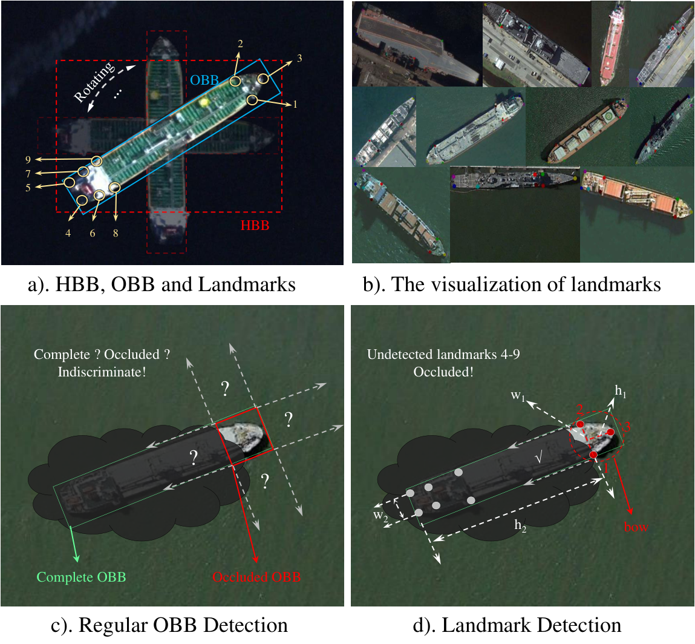
(a) Illustrations of HBB, OBB, and landmarks. (b) Landmarks of various ships under different attitudes. (c) Incomplete detections with conventional OBBs. (d) Incomplete detections revealed by landmark-based detection.
Ship Key Structural Landmarks
Common structural characteristics of ships from a remote sensing perspective
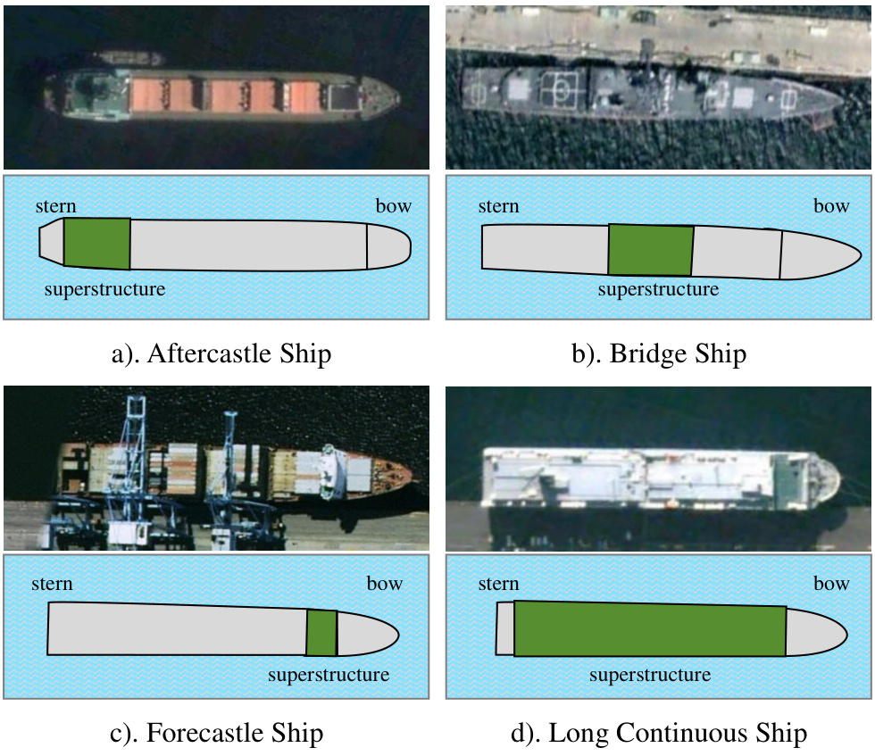
Comparison of three key-landmark-based ship structural representation schemes (LM3, LM5, LM9)
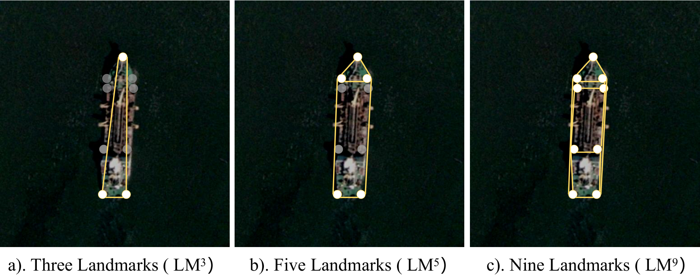
Multi-task outputs derived from landmarks via topological geometric relationships: HBB, OBB, and fine-grained segmentation
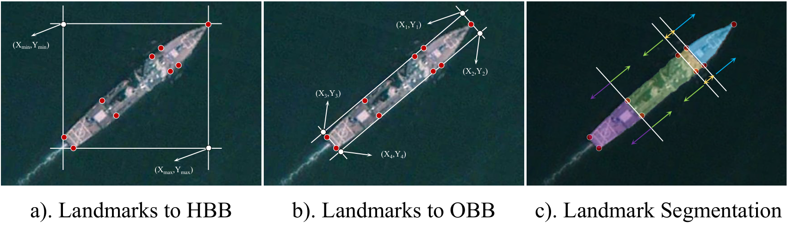
Visual comparison of HBB and OBB converted from ship key landmarks under different IoU thresholds
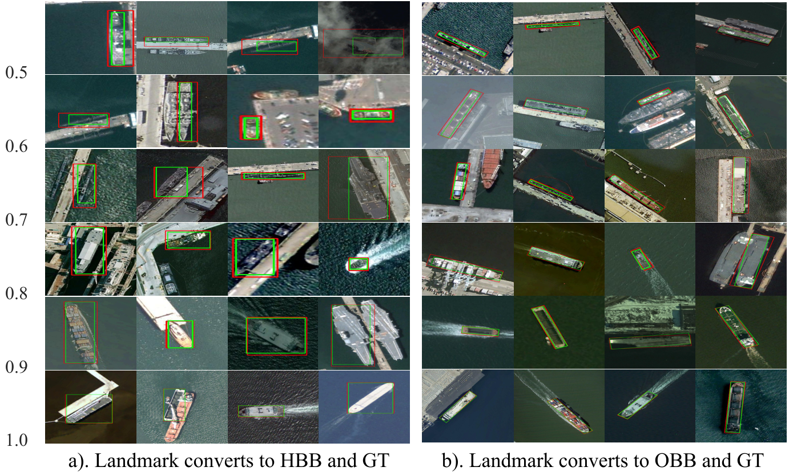
Fine-grained segmentation of ships based on annotated landmarks and structural connectivity
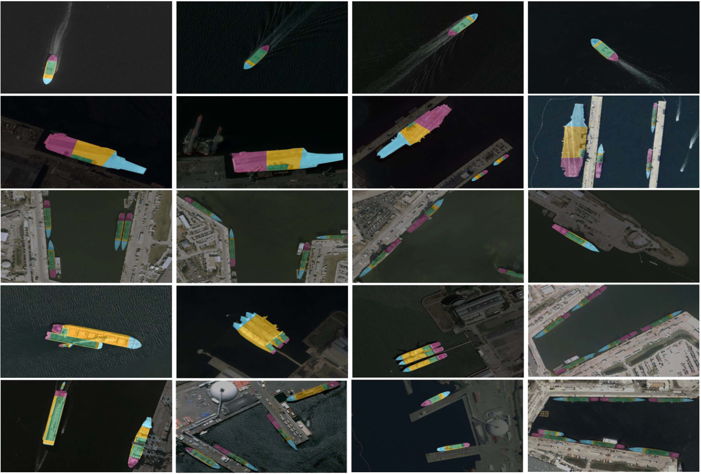
SHPG-Transformer Architecture
Overall framework of oriented ship detection via key structural landmarks and architecture of the SHPG-Transformer module
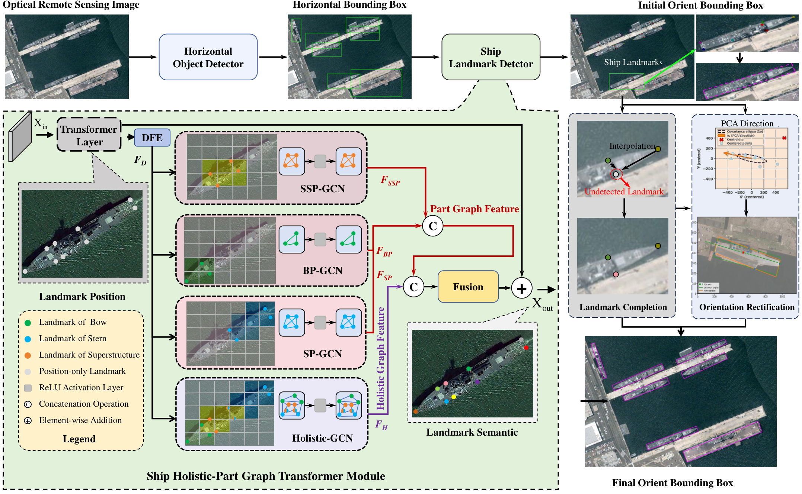
The two-stage framework consists of a Horizontal Object Detector, the SHPG-Transformer landmark detector (HRNet + Transformer + Holistic-GCN + Part-GCN branches BP-GCN/SP-GCN/SSP-GCN), and a Coarse-to-Fine Landmark Refinement module with landmark completion and PCA-based orientation rectification.
Experimental Results
Visualization of our method and other methods for ship OBB detection on HRSC2016 (red: GT, green: prediction)
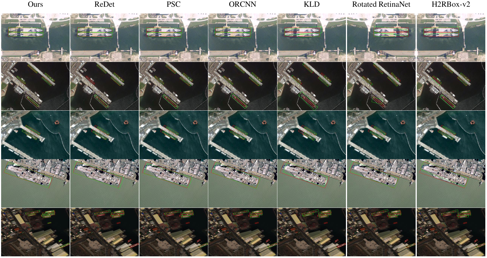
Visualization of semantic and fine-grained segmentation with landmark-guided SAM across five public datasets (HRSC2016, ShipRSImageNet, ISDSD, FGSCR-42, FGSD2021)
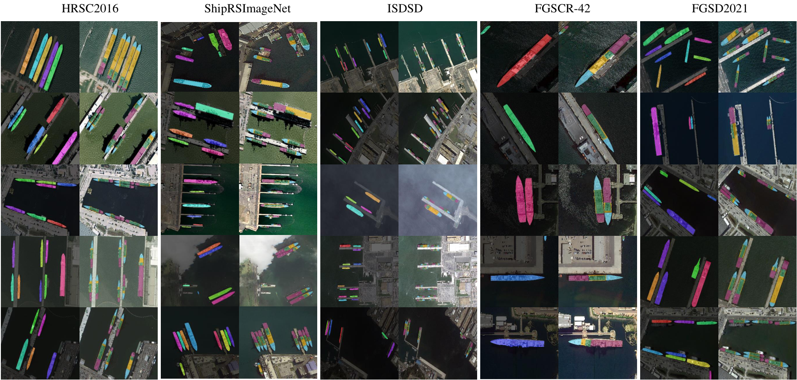
Detection results under challenging conditions (Dense, Small, Incomplete subsets). Red: GT, Green: prediction.
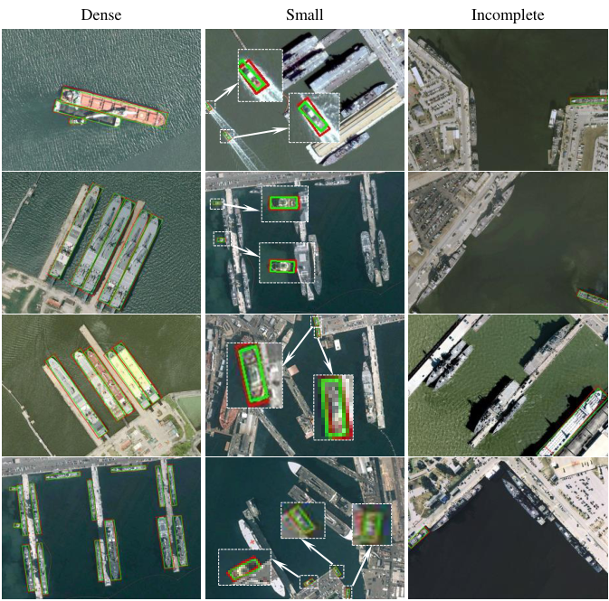
Failure detection examples (IoU < 0.5) with predicted landmark positions and indices visualized
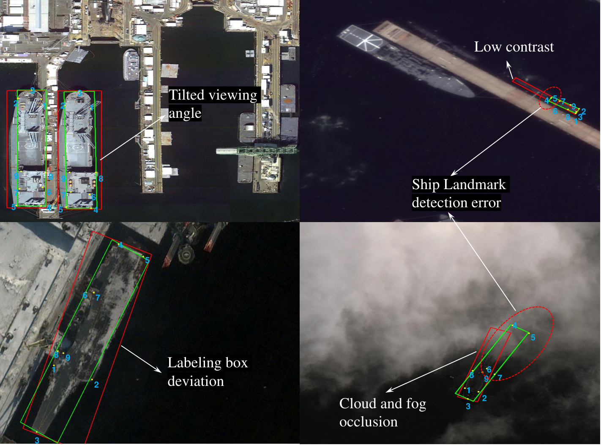
Performance Comparison
Results on HRSC2016
| Method | Publication | Input Size | Year | mAP |
|---|---|---|---|---|
| SES-O | TIP | 1024×1024 | 2023 | 0.9064 |
| CANet | JSTARS | 800×800 | 2025 | 0.9066 |
| OriMamba | JAG | 800×800 | 2025 | 0.9070 |
| MSRO-Net | Sci. Rep. | 800×800 | 2025 | 0.9070 |
| Ours (SHPG-Transformer) | TIP | 640×640 | 2025 | 0.9086 |
Full comparison includes 30+ methods (anchor-based and anchor-free). Our method achieves state-of-the-art with mAP of 0.9086.
Results on ShipRSImageNet
| Method | Publication | Input Size | Year | mAP |
|---|---|---|---|---|
| RoI Transformer | CVPR | 1024×1024 | 2019 | 0.6522 |
| R3Det | AAAI | 1024×1024 | 2021 | 0.6860 |
| DAL | AAAI | 1024×1024 | 2021 | 0.6940 |
| O-RCNN | ICCV | 1024×1024 | 2021 | 0.7150 |
| PETDNet | TGRS | 1024×1024 | 2023 | 0.7490 |
| WTDBNet | Remote Sens. | 1024×1024 | 2025 | 0.7511 |
| Ours (SHPG-Transformer) | TIP | 1024×1024 | 2025 | 0.8015 |
* Improves state-of-the-art by 3.65%. Under our default 640×640 input size, mAP is 0.7876.
Paper Download
Oriented Ship Detection via Key Structural Landmarks in Optical Remote Sensing Image
Youmei Zhang, Yang Yu, Bin Li, Zhiheng Li, Mingxin Zhang, Runmin Cong, Wei Zhang
IEEE Transactions on Image Processing (TIP), 2025